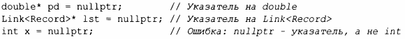
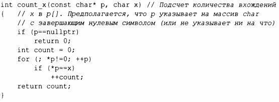
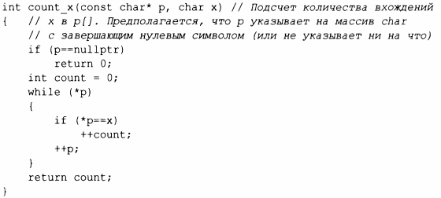

⇐1.7. Указатели, массивы и ссылки Содержание 1.8. Проверки⇒
Мы пытаемся обеспечить, чтобы указатель всегда указывал на объект, так что его можно разыменовывать. Если у нас нет такого объекта или если нужно представить понятие "нет объекта" (например, для конца списка), мы даем указателю значение nullptr ("нулевой указатель"). Существует только единственный nullptr, используемый всеми типами указателей:
Зачастую оказывается разумной проверка, указывает ли аргумент-указатель на что-либо:
Обратите внимание, как мы можем перемещать указатель с использованием оператора ++ так, чтобы он указывал на следующий элемент массива, и что мы можем убрать инициализатор в инструкции for, если он нам не нужен.
Определение count_x() предполагает, что char* является строкой в стиле языка программирования С, т.е. указатель указывает на массив с завершающим нулевым символом. Символы в строковом литерале неизменяемы, поэтому для возможности вызова count_x("Hello!") я объявил функцию count_x() с аргументом const char*.
В более старом коде вместо nullptr обычно используется О или NULL. Однако применение nullptr устраняет потенциальную путаницу между целыми числами (такими, как О или NULL) и указателями (такими, как nullptr).
В примере с coun t_х ( ) мы не используем инициализирующую часть цикла for, поэтому можем использовать более простой цикл while:
Инструкция while выполняется до тех пор, пока условие не станет ложным.
Проверка числового значения (например, while(*р) в count_х()) эквивалентна сравнению значения с О (например, while ( *р != О)). Проверка значения указателя (например, if(р)) эквивалентна сравнению значения с nullptr (например, if(р != nullptr)).
"Нулевой ссылки" не существует. Ссылка должна ссылаться на действительный объект (и реализации предполагают, что это так и есть). Есть запутанные и хитрые способы нарушить это правило, но так поступать не следует.